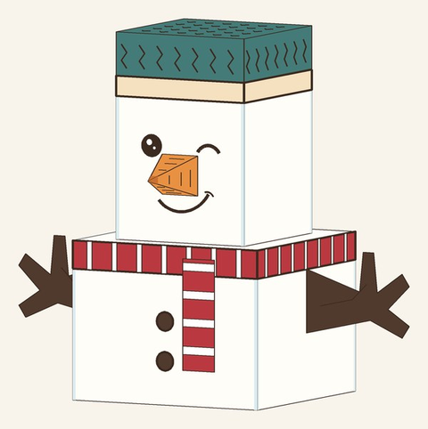
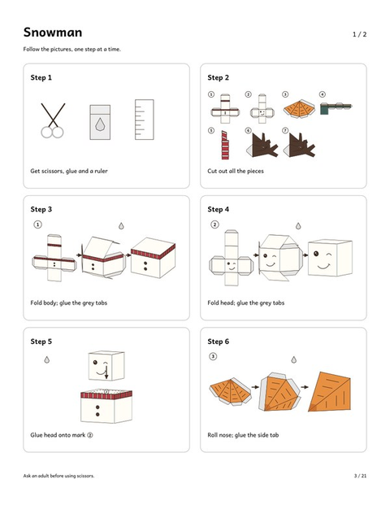
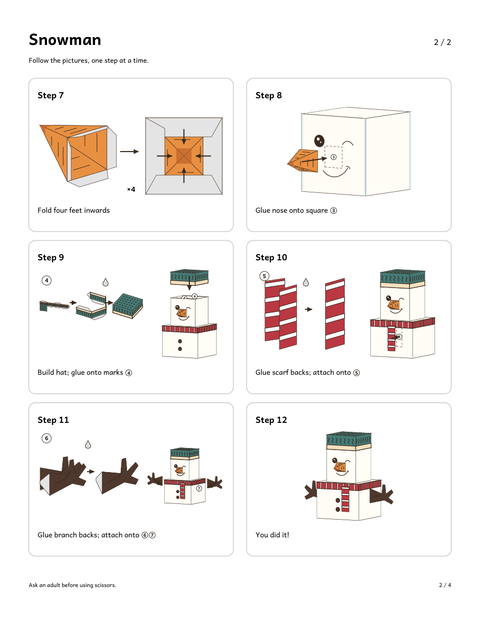
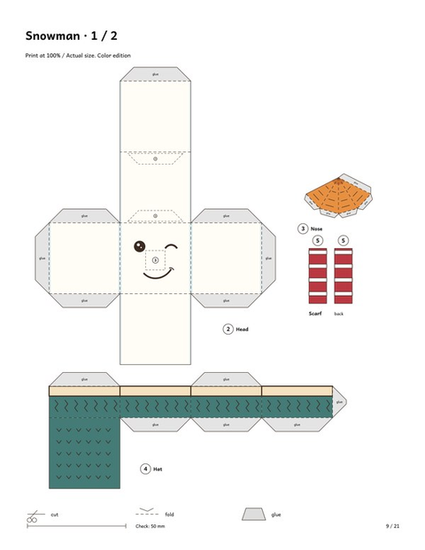

Paper Snowman Craft for Kids
Free 3D paper snowman template · 12 picture steps · ages 6+
Looking for a paper snowman craft a child can actually follow? This free printable builds a standing 3D snowman, about 3.6 in (9 cm) tall, with a winking face, a striped scarf and a little carrot nose. All you need is a printer, paper, scissors and glue.
There is almost no text to read. The instructions are 12 small picture steps, and every piece is numbered in the order you use it. We tested the snowman instructions with a 10-year-old, and the snowman came out right.
Download the snowman free, in US Letter or A4:
⬇ Download the free 3D paper snowman (US Letter PDF) ⬇ Download the free 3D paper snowman (A4 PDF)Free PDF includes:
- Picture-by-picture instructions (12 steps)
- Color template on 2 pages
A look inside the free snowman




How to make a 3D paper snowman
Print the template at 100% ("Actual size"), not "Fit to page". Cardstock (160–200 gsm, roughly 65–110 lb) keeps the body square so the snowman stands up on its own.
Cut out the numbered pieces, fold along the dashed lines and glue the grey tabs, one picture step at a time. You fold the body first, then the head, and glue the head onto its mark on the body. The carrot nose is a tiny pyramid, and the smallest pieces go on in number order.
Let each join dry before adding the next piece. A glue stick is enough, and a ruler helps make crisp folds.
Ages and adult help
The snowman is made for ages 6+. A grown-up should cut the smallest pieces; kids can do the folding and gluing and enjoy watching the figure take shape, step by step.
It also works as a calm winter-break or classroom activity: print one per child and let everyone build their own.
The free download is the snowman only. If your kids enjoy it, the full Christmas Papercraft Pack adds a reindeer and Santa built the same way, plus a coloring edition to color first and build after.
Christmas Papercraft Pack

- 3D paper snowman, reindeer and Santa
- Picture-by-picture instructions — 12 small steps per figure, almost no text
- Color edition + coloring edition (color first, then build)
- US Letter & A4 · 21 pages · instant PDF download
$7.00
Get the Christmas Papercraft Pack →Printing and gluing tips
- Choose the US Letter or A4 file that matches your paper, and print single-sided at 100%.
- Use cardstock if you have it; thin paper makes a floppier snowman.
- Crease fold lines against a ruler before folding.
- Grown-ups cut the smallest pieces, kids fold and glue.
Frequently asked questions
How tall is the paper snowman?
The finished snowman is about 3.6 in (9 cm) tall, small enough for a desk, shelf or windowsill.
Is the snowman template really free?
Yes. The 4-page snowman PDF, with picture instructions and the color template, is free in US Letter and A4. The reindeer and Santa are part of the paid Christmas Papercraft Pack.
Do kids need to read the instructions?
Not much. The steps are pictures with a short phrase each, and the pieces are numbered, so kids follow the pictures from step 1 to step 12.